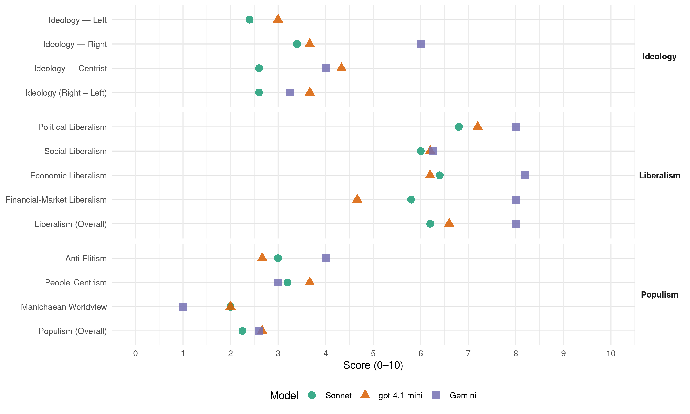

SDS (Slovenia, 2004)
manifesto_id 97330_200410
Get full text: This site shows derived annotations and short verbatim quotes only. The full manifesto text is © Manifesto Project / WZB — obtain it via manifesto-project.wzb.eu using the manifesto_id above.
Headline scores
| Dimension | Sonnet | gpt-4.1-mini | Gemini |
|---|---|---|---|
| Populism (Overall) | 2.2 | 2.7 | 2.6 |
| Anti-Elitism | 3.0 | 2.7 | 4.0 |
| People-Centrism | 3.2 | 3.7 | 3.0 |
| Manichaean Worldview | 2.0 | 2.0 | 1.0 |
| Ideology (Right − Left) | 2.6 | 3.7 | 3.2 |
| Liberalism (Overall) | 6.2 | 6.6 | 8.0 |
| Political Liberalism | 6.8 | 7.2 | 8.0 |
| Social Liberalism | 6.0 | 6.2 | 6.2 |
| Economic Liberalism | 6.4 | 6.2 | 8.2 |
| Financial-Market Liberalism | 5.8 | 4.7 | 8.0 |
Evidence per dimension
Economic Liberalism
Gemini · score 8.0 · verified · chunk 1
“odpravili preobremenjenost podjetništva z administrativnimi zadevami”
zagotovili plačilno disciplino ter odpravili preobremenjenost podjetništva z administrativnimi zadevami.
Gemini · score 8.0 · verified · chunk 2
“svobodnem tržnem gospodarstvu”
RS je danes del demokratičnega in svobodnega Zahoda, ki temelji na svobodnem tržnem gospodarstvu, vladavini prava, spoštovanju človekovih pravic
Gemini · score 9.0 · verified · chunk 3
“izvesti deregulacijo na področju gospodarstva”
izvajanje pravnega reda zagotoviti njegovo izvajanje, izvesti deregulacijo na področju gospodarstva. Na področju javne infrastrukture
Gemini · score 8.0 · verified · chunk 4
“znižati obdavčitev dela”
slovenskega gospodarstva treba nujno znižati obdavčitev dela (ukinitev davka na izplačane plače
Gemini · score 8.0 · verified · chunk 5
“država ne vmešava v gospodarstvo”
Program za prihodnost Strokovnega sveta predvideva, da se država ne vmešava v gospodarstvo, razen če obstajajo razlogi
gpt-4.1-mini · score 5.0 · verified · chunk 1
“poenostavili sedanji neučinkovit davčni sistem”
Dolgoročno gospodarsko rast bomo dosegali tako, da bomo: izboljšali kakovost izobraževanja zmanjšali prevelik delež javnih financ v BDP zagotovili stabilen sistem zdravstvenega in pokojninskega varstva s konkurenčno ponudbo dodatnih zavarovanj poenostavili sedanji neučinkovit davčni sistem in preučili možnost uvedbe ene same konstantne mejne davčne stopnje (flat tax) za vse vrste dohodka
gpt-4.1-mini · score 5.0 · verified · chunk 2
“svobodno tržno gospodarstvo, liberaliziran trg elektronskih komunikacij”
…RS je danes del demokratičnega in svobodnega Zahoda, ki temelji na svobodnem tržnem gospodarstvu… neustrezno liberaliziran trg elektronskih komunikacij in pomanjkanje konkurenčnosti…
gpt-4.1-mini · score 7.0 · verified · chunk 3
“spremembe Zakona o evidencah s področja dela in Zakona o stavki”
Obremenitev dela z davki in prispevki je med najvišjimi v Evropski zvezi, zato je za dosego večje konkurenčnosti slovenskega gospodarstva treba nujno znižati obdavčitev dela (ukinitev davka na izplačane plače, …). Socialno partnerstvo in socialni dialog je smiselno krepiti in razvijati v smeri dejanska verodostojnost in reprezentativnost socialni partnerjev, saj ni enakovrednih materialnih pogojev za delovanje sindikatov, pa tudi obvezno članstvo v obeh zbornicah (GZS in OZS) neugodno vpliva na razvoj konkurenčnih združenj delodajalcev. Zlasti pomemben je sprejem Zakona o kolektivnih pogodbah in Zakona o udeležbi zaposlenih pri dobičku ter spremembe Zakona o evidencah s področja dela in Zakona o stavki.
gpt-4.1-mini · score 7.0 · verified · chunk 4
“znižati obdavčitev dela (ukinitev davka na izplačane plače)”
Obremenitev dela z davki in prispevki je med najvišjimi v Evropski zvezi, zato je za dosego večje konkurenčnosti slovenskega gospodarstva treba nujno znižati obdavčitev dela (ukinitev davka na izplačane plače, …).
gpt-4.1-mini · score 7.0 · verified · chunk 5
“večji poudarek deregulaciji gospodarstva (odpravi dovoljenj za opravljanje dejavnosti)”
Večji poudarek deregulaciji gospodarstva (odpravi dovoljenj za opravljanje dejavnosti), poenostavljanju postopkov in odpravi administrativnih ovir. Zagotovitev spoštovanja visokih standardov poslovanja javne uprave z državljani v vseh organih javne uprave, ne le v posameznih segmentih uprave.
Sonnet · score 5.0 · verified · chunk 1
“poenostavili sedanji neučinkovit davčni sistem”
dolgoročno gospodarsko rast bomo dosegali tako, da bomo: … poenostavili sedanji neučinkovit davčni sistem in preučili možnost uvedbe ene same konstantne mejne davčne stopnje
Sonnet · score 6.0 · verified · chunk 2
“svobodnem tržnem gospodarstvu”
RS je danes del demokratičnega in svobodnega Zahoda, ki temelji na svobodnem tržnem gospodarstvu, vladavini prava
Sonnet · score 8.0 · verified · chunk 3
“ukiniti državni intervencionizem”
Odbor za gospodarstvo ugotavlja, da je za uspešen gospodarski razvoj potrebno ukiniti državni intervencionizem, opredeliti elemente in dejavnike za pospeševanje dolgoročne gospodarske rasti
Sonnet · score 6.0 · verified · chunk 4
“znižati obdavčitev dela”
za dosego večje konkurenčnosti slovenskega gospodarstva treba nujno znižati obdavčitev dela (ukinitev davka na izplačane plače, …)
Sonnet · score 7.0 · verified · chunk 5
“država ne vmešava v gospodarstvo”
Program za prihodnost Strokovnega sveta predvideva, da se država ne vmešava v gospodarstvo, razen če obstajajo razlogi za subopotimalno delovanje trgov
Financial-Market Liberalism
Gemini · score 7.0 · verified · chunk 1
“nedokončano privatizacijo bančnega sistema”
Kot enega od razlogov neučinkovitost bančnega sistema navajam tudi nedokončano privatizacijo bančnega sistema
Gemini · score 9.0 · verified · chunk 3
“privatizacijo in liberalizacijo trga kapitala”
javnih financ. Poleg tega Program predvideva privatizacijo in liberalizacijo trga kapitala ter vmešavanje države zgolj po
gpt-4.1-mini · score 4.0 · verified · chunk 1
“Slovenski bančni sistem ni dovolj učinkovit zaradi svoje preteklosti”
Slovenski bančni sistem ni dovolj učinkovit zaradi svoje preteklosti in zaradi monetarne politike Banke Slovenije, ki je v namen sterilizacije deviznih prilivov poslovnim bankam omogočala višje donose kot trg. To je tudi razlog, da banke niso bile prisiljene v znižanje aktivnih obrestnih mer.
gpt-4.1-mini · score 4.0 · verified · chunk 2
“finančnih sredstev zdravstvenega zavarovanja v proračun”
…država je po tem letu namesto sistemskega dograjevanja in odpravljanja slabosti z zakonodajnimi posegi pomembno vplivala na odliv finančnih sredstev zdravstvenega zavarovanja v proračun…
gpt-4.1-mini · score 6.0 · verified · chunk 3
“pospešeno nadaljevanje privatizacije finančnega sistema”
Program za področje financ združuje dolgoročni strateški pristop in predlaga osnovni nabor kratkoročnih ukrepov za njihovo uresničevanje. Program ne predlaga posebnih ukrepov gospodarske politike, razen ukrepov doseganja maksimalne odprtosti trga, saj bi tovrstni ukrepi le povečali potrebe po administriranju. 1. PODROČJE FINANČNEGA SISTEMA Osnovna: Alternativni program ima za cilj koordinacijo ekonomskih politik, še posebej na področju fiskalne konsolidacije in vzdržnosti javnih financ. Poleg tega Program predvideva privatizacijo in liberalizacijo trga kapitala ter vmešavanje države zgolj po predhodni »costbenefit« analizi upravičenosti posega. 1.1 Pospešeno nadaljevanje privatizacije finančnega sistema; delna privatizacija slabo vpliva na učinkovitost finančnega sistema.
Sonnet · score 4.0 · verified · chunk 1
“nedokončano privatizacijo bančnega sistema”
navajam tudi nedokončano privatizacijo bančnega sistema, ki ostaja eden od temeljnih razlogov počasnejše rasti visoko produktivnih podjetij
Sonnet · score 5.0 · verified · chunk 2
“Ni možnosti za razvoj pravih prostovoljnih zdravstvenih zavarovanj”
Ni možnosti za razvoj pravih prostovoljnih zdravstvenih zavarovanj in konkurence na tem področju.
Sonnet · score 8.0 · verified · chunk 3
“Liberalizacija trga kapitala in privabljanje tujega kapitala”
1.2 Liberalizacija trga kapitala in privabljanje tujega kapitala; nadaljevali bomo vladno politike na področju uvajanja transparentnosti poslovanja
Sonnet · score 6.0 · verified · chunk 4
“kapitalski prihodki itd.”
v osnove za obračun vključene vse vrste dohodkov (plače, obresti, avtorski honorarji, sejnine, kapitalski prihodki itd.)
Sonnet · score 6.0 · verified · chunk 5
“razvoja finančnega sektorja ter finančno odvisnih”
Osnutek Strategije razvoja Slovenije predstavlja dobro teoretsko podlago na področju koordinacije ekonomskih politik, razvoja finančnega sektorja ter finančno odvisnih mikroekonomskih trendov.
Political Liberalism
Gemini · score 8.0 · verified · chunk 1
“v svobodni demokratični družbi”
Blaginjo lahko ustvarjamo le v svobodni demokratični družbi, v kateri se posamezniki obnašajo fer in pošteno
Gemini · score 8.0 · verified · chunk 2
“vladavini prava, spoštovanju človekovih pravic”
RS je danes del demokratičnega in svobodnega Zahoda, ki temelji na svobodnem tržnem gospodarstvu, vladavini prava, spoštovanju človekovih pravic, varstvu manjšin
Gemini · score 8.0 · verified · chunk 3
“dosledno spoštovanje zakona o dostopu do informacij”
delovati odprto in pregledno. Zato bomo zagotovili dosledno spoštovanje zakona o dostopu do informacij javnega značaja. V tem zakonu bomo
Gemini · score 8.0 · verified · chunk 4
“aktivne zaščite človekovih pravic z mednarodnimi”
Svet Evrope si bo Republika Slovenija prizadevala za nadaljnje uresničevanje politike aktivne zaščite človekovih pravic z mednarodnimi sporazumi in drugimi
Gemini · score 8.0 · verified · chunk 5
“ustavno pravico do sodnega varstva”
škodovati varovanju ustavno zagotovljenih pravic in ustavni pravici do sodnega varstva.
gpt-4.1-mini · score 7.0 · verified · chunk 1
“Blaginjo lahko ustvarjamo le v svobodni demokratični družbi”
Sestavni del našega programa za prihodnost so svoboda, pravičnost, poštenje in solidarnost. Blaginjo lahko ustvarjamo le v svobodni demokratični družbi, v kateri se posamezniki obnašajo fer in pošteno drug do drugega.
gpt-4.1-mini · score 7.0 · verified · chunk 2
“vladavini prava, spoštovanju človekovih pravic, varstvu manjšin”
…RS je danes del demokratičnega in svobodnega Zahoda, ki temelji na svobodnem tržnem gospodarstvu, vladavini prava, spoštovanju človekovih pravic, varstvu manjšin in intenzivnem medkulturnem sodelovanju…
gpt-4.1-mini · score 7.0 · verified · chunk 3
“zagotovili dosledno spoštovanje zakona o dostopu do informacij javnega značaja”
Celoten javni sektor mora delovati odprto in pregledno. Zato bomo zagotovili dosledno spoštovanje zakona o dostopu do informacij javnega značaja. V tem zakonu bomo odstranili ovire, na katere se pogosto sklicujejo institucije v javnem sektorju, ko želijo javnosti prikriti podatke o svojem delovanju.
gpt-4.1-mini · score 8.0 · verified · chunk 4
“zagotoviti zaščito javnega interesa in nadzora na področju prostovoljnih zdravstvenih zavarovanj”
Z zakonodajnimi rešitvami bomo zagotovili zaščito javnega interesa in nadzora na področju prostovoljnih zdravstvenih zavarovanj za doplačila. Uveljavili bomo vzajemnost in med-generacijsko solidarnost s starostnimi rezervacijami tako, da bo dohodkovno povprečen zavarovanec lahko prevzel tveganje za doplačila.
gpt-4.1-mini · score 7.0 · verified · chunk 5
“zagotovitev neodvisnosti agencije za pošto in elektronske komunikacije”
zagotovitev neodvisnosti agencije za pošto in elektronske komunikacije. Neodvisnost Agencije je zagotovilo za pravično podeljevanje radijskih in televizijskih frekvenc, zagotavljanje izvajanja zakonodaje in ustvarjanja okolja za razvoj konkurenčnosti.
Sonnet · score 6.0 · verified · chunk 1
“Demokracija na slovenskih tleh je mogoča”
Demokracija na slovenskih tleh je mogoča samo v okvirih nacionalne države.
Sonnet · score 7.0 · verified · chunk 2
“svobodnem tržnem gospodarstvu, vladavini prava”
RS je danes del demokratičnega in svobodnega Zahoda, ki temelji na svobodnem tržnem gospodarstvu, vladavini prava, spoštovanju človekovih pravic
Sonnet · score 7.0 · verified · chunk 3
“dosledno spoštovanje zakona o dostopu do informacij javnega značaja”
Celoten javni sektor mora delovati odprto in pregledno. Zato bomo zagotovili dosledno spoštovanje zakona o dostopu do informacij javnega značaja
Sonnet · score 7.0 · verified · chunk 4
“spoštovanje človekovih pravic kot univerzalno načelo”
ki bodo preprečile zlorabo mednarodnega pravnega reda za zaščito nedemokratičnih diktatorskih režimov, in dolgoročno uveljavile spoštovanje človekovih pravic kot univerzalno načelo mednarodne ureditve
Sonnet · score 7.0 · verified · chunk 5
“Pravna država in z njo povezana pravna varnost”
Pravna država in z njo povezana pravna varnost je v veliki meri odvisna od možnosti posameznih subjektov v družbi, da si v okviru tretje veje oblasti … varujejo svoje pravice.
Liberalism (Overall)
Gemini · score 8.0 · verified · chunk 1
“v svobodni demokratični družbi”
Blaginjo lahko ustvarjamo le v svobodni demokratični družbi, v kateri se posamezniki obnašajo fer in pošteno
Gemini · score 7.0 · verified · chunk 2
“svobodnem tržnem gospodarstvu”
RS je danes del demokratičnega in svobodnega Zahoda, ki temelji na svobodnem tržnem gospodarstvu, vladavini prava, spoštovanju človekovih pravic
Gemini · score 9.0 · verified · chunk 3
“izvesti deregulacijo na področju gospodarstva”
izvajanje pravnega reda zagotoviti njegovo izvajanje, izvesti deregulacijo na področju gospodarstva. Na področju javne infrastrukture
Gemini · score 8.0 · verified · chunk 4
“znižati obdavčitev dela”
slovenskega gospodarstva treba nujno znižati obdavčitev dela (ukinitev davka na izplačane plače
Gemini · score 8.0 · verified · chunk 5
“država ne vmešava v gospodarstvo”
Program za prihodnost Strokovnega sveta predvideva, da se država ne vmešava v gospodarstvo, razen če obstajajo razlogi
gpt-4.1-mini · score 6.0 · verified · chunk 1
“Blaginjo lahko ustvarjamo le v svobodni demokratični družbi”
Sestavni del našega programa za prihodnost so svoboda, pravičnost, poštenje in solidarnost. Blaginjo lahko ustvarjamo le v svobodni demokratični družbi, v kateri se posamezniki obnašajo fer in pošteno drug do drugega.
gpt-4.1-mini · score 6.0 · verified · chunk 2
“vladavini prava, spoštovanju človekovih pravic, varstvu manjšin”
…RS je danes del demokratičnega in svobodnega Zahoda, ki temelji na svobodnem tržnem gospodarstvu, vladavini prava, spoštovanju človekovih pravic, varstvu manjšin in intenzivnem medkulturnem sodelovanju…
gpt-4.1-mini · score 7.0 · verified · chunk 3
“zagotovili dosledno spoštovanje zakona o dostopu do informacij javnega značaja”
Celoten javni sektor mora delovati odprto in pregledno. Zato bomo zagotovili dosledno spoštovanje zakona o dostopu do informacij javnega značaja. V tem zakonu bomo odstranili ovire, na katere se pogosto sklicujejo institucije v javnem sektorju, ko želijo javnosti prikriti podatke o svojem delovanju.
gpt-4.1-mini · score 7.0 · verified · chunk 4
“znižati obdavčitev dela (ukinitev davka na izplačane plače)”
Obremenitev dela z davki in prispevki je med najvišjimi v Evropski zvezi, zato je za dosego večje konkurenčnosti slovenskega gospodarstva treba nujno znižati obdavčitev dela (ukinitev davka na izplačane plače, …).
gpt-4.1-mini · score 7.0 · verified · chunk 5
“zagotovitev neodvisnosti agencije za pošto in elektronske komunikacije”
zagotovitev neodvisnosti agencije za pošto in elektronske komunikacije. Neodvisnost Agencije je zagotovilo za pravično podeljevanje radijskih in televizijskih frekvenc, zagotavljanje izvajanja zakonodaje in ustvarjanja okolja za razvoj konkurenčnosti.
Sonnet · score 5.0 · verified · chunk 1
“Blaginjo lahko ustvarjamo le v svobodni demokratični družbi”
Sestavni del našega programa za prihodnost so svoboda, pravičnost, poštenje in solidarnost. Blaginjo lahko ustvarjamo le v svobodni demokratični družbi
Sonnet · score 6.0 · verified · chunk 2
“svobodnem tržnem gospodarstvu, vladavini prava”
RS je danes del demokratičnega in svobodnega Zahoda, ki temelji na svobodnem tržnem gospodarstvu, vladavini prava, spoštovanju človekovih pravic
Sonnet · score 7.0 · verified · chunk 3
“privatizacijo in liberalizacijo trga kapitala”
Program predvideva privatizacijo in liberalizacijo trga kapitala ter vmešavanje države zgolj po predhodni »costbenefit« analizi upravičenosti posega
Sonnet · score 6.0 · verified · chunk 4
“spoštovanje človekovih pravic kot univerzalno načelo”
dolgoročno uveljavile spoštovanje človekovih pravic kot univerzalno načelo mednarodne ureditve
Sonnet · score 7.0 · verified · chunk 5
“država ne vmešava v gospodarstvo”
Program za prihodnost Strokovnega sveta predvideva, da se država ne vmešava v gospodarstvo, razen če obstajajo razlogi za subopotimalno delovanje trgov
Anti-Elitism
Gemini · score 3.0 · verified · chunk 1
“vedno imata prav narod in ljudstvo”
ali naj prevladajo koristi naroda, ljudstva ali oblasti mora biti odgovor vselej isti: vedno imata prav narod in ljudstvo.
Gemini · score 4.0 · verified · chunk 2
“zaradi nepravilnega vodenja ministrstva za zdravje”
Projekt »Razvoj upravljanja sistema zdravstvenega varstva« kljub velikim finančnim sredstvom zaradi nepravilnega vodenja ministrstva za zdravje, ni dal zastavljenih rezultatov.
Gemini · score 6.0 · verified · chunk 3
“zemljiška politika omogoča klientelizem in korupcijo”
trajnostni razvoj mest je le politična parola. Zemljiška politika omogoča klientelizem in korupcijo! -mnogi primeri notranje obveščenosti
Gemini · score 3.0 · verified · chunk 4
“zgrešenosti zdravstvene politike v sedanjem mandatu”
povpraševanja po storitvah in zgrešenosti zdravstvene politike v sedanjem mandatu, izhajala iz ugotovitve
Gemini · score 4.0 · verified · chunk 5
“preprečevali klintelizem in korupcijo”
aktivnostjo javnih zemljiških skladov in strožjim nadzorom bomo preprečevali klintelizem in korupcijo.
gpt-4.1-mini · score 3.0 · verified · chunk 1
“skrajni elitizem za Slovence nerazumna skrajnost”
Nastajanje novih elit na Slovenskem mora biti nadzorovano, razumno selektivno in vrednoteno po njegovi koristnosti in funkcionalnosti. Skrajni elitizem za Slovence nerazumna skrajnost. Nastajanje novih elit na Slovenskem mora biti nadzorovano, razumno selektivno in vrednoteno po njegovi koristnosti in funkcionalnosti.
gpt-4.1-mini · score 2.0 · verified · chunk 2
“vlada ni izpogajala prehodnega obdobja”
…vlada ni izpogajala prehodnega obdobja. Cestni tovorni promet je še vedno v prednosti pred železniškim. V potniškem prometu pa prevladuje prevoz z osebnimi vozili…
gpt-4.1-mini · score 3.0 · verified · chunk 3
“vlada vodi samo ekskluzivistično stanovanjsko ekonomsko politiko”
Vladna stanovanjska politika ni perspektivna! -vlada vodi samo ekskluzivistično stanovanjsko ekonomsko politiko in ne upošteva kompleksnostii stanovanja,ki ni samo ekonomska kategorija, -stanovanje je generalni urbani problem.
Sonnet · score 5.0 · mixed · chunk 1
“oblast v težavah, ker ne razume”
če je zanje nacionalni interes Slovencev nelegitimen… potem je taka oblast v težavah, ker ne razume in ne upošteva temeljnega načela demokratičnosti
Sonnet · score 4.0 · verified · chunk 2
“populističnimi rešitvami bela knjiga ni primerna”
S svojimi nepreverjenimi podatki in populističnimi rešitvami bela knjiga ni primerna osnova za reorganizacijo zdravstva v Sloveniji.
Sonnet · score 3.0 · verified · chunk 3
“javna politika, povezana z zasebnim stanovanjskim trgom je dovolila korupcijo”
vlada stanovanje obravnava le kot potrošnjo, ne pa tudi kot proizvodnjo, … javna politika, povezana z zasebnim stanovanjskim trgom je dovolila korupcijo in stanovanjske goljufije
Sonnet · score 2.0 · verified · chunk 4
“nosi odgovornost za stanje Ministrstvo za zdravje”
za sedanjo krizo v zdravstvu niso krivi zaposleni zdravstveni delavci, pač pa nosi odgovornost za stanje Ministrstvo za zdravje
Sonnet · score 3.0 · verified · chunk 5
“nekompetentne vlade hitro izrodi v protekcionizem”
Problem »kvazi« pro-razvojne politike, ki jo je vlada izvajala … je v tem, da se v rokah nekompetentne vlade hitro izrodi v protekcionizem s hudimi posledicami za splošno blaginjo.
Ideology — Centrist
Gemini · score 5.0 · verified · chunk 3
“zemljiška politika omogoča klientelizem in korupcijo”
trajnostni razvoj mest je le politična parola. Zemljiška politika omogoča klientelizem in korupcijo! -mnogi primeri notranje obveščenosti
Gemini · score 3.0 · verified · chunk 4
“zgrešenosti zdravstvene politike v sedanjem mandatu”
povpraševanja po storitvah in zgrešenosti zdravstvene politike v sedanjem mandatu, izhajala iz ugotovitve
Gemini · score 4.0 · verified · chunk 5
“preprečevali klintelizem in korupcijo”
aktivnostjo javnih zemljiških skladov in strožjim nadzorom bomo preprečevali klintelizem in korupcijo.
gpt-4.1-mini · score 6.0 · verified · chunk 1
“V Sloveniji ima oblast ljudstvo”
V Sloveniji ima oblast ljudstvo. V Sloveniji kot nacionalni državi tvorijo Slovenci večinski del ljudstva. Vendar za opredelitev ljudstva narodna pripadnost sploh ni pomembna. Ljudstvo je skupnost ljudi, ki jo določa in razmejuje pravna vez državljanstva.
gpt-4.1-mini · score 4.0 · verified · chunk 2
“zagovarjala transparentno, strateško premišljeno in verodostojno zunanjo politiko”
…SDS bo tudi kot vladna stranka še naprej zagovarjala transparentno, strateško premišljeno in verodostojno zunanjo politiko RS…
gpt-4.1-mini · score 3.0 · verified · chunk 3
“usklajevati resorne politike. Ukinili bomo ministrstvo za informacijsko družbo”
Okrepili bomo koordinacijo med ministrstvi in zagotavljali koherentno vodenje politike. Vlada mora delovati enotno in ne kot zbir posameznih resornih politik. Za pomembnejše politične projekte (regionalni razvoj, zdravstvena reforma, reforma davčnega sistema itd.) bodo po odločitvi in pod nadzorom predsednika vlade delovale stalne koordinacijske skupine ministrov, kjer se bodo usklajevale resorne politike. Ukinili bomo ministrstvo za informacijsko družbo, katerega samostojno delovanje je glede na obseg delovnega področja in število zaposlenih (nekaj čez 50) neracionalno in neupravičeno.
Sonnet · score 3.0 · verified · chunk 1
“V ospredje postavljamo tisto, kar nas povezuje”
Za pozitivne premike in trajen napredek v družbi je zelo pomembna pripravljenost državljanov… V ospredje postavljamo tisto, kar nas povezuje.
Sonnet · score 3.0 · verified · chunk 2
“slovenski nacionalni interes”
bo samozavestno in preudarno zastopala slovenski nacionalni interes, pri čemer bo imela pomembno vlogo
Sonnet · score 3.0 · verified · chunk 3
“ukrepov doseganja maksimalne odprtosti trga”
Program ne predlaga posebnih ukrepov gospodarske politike, razen ukrepov doseganja maksimalne odprtosti trga
Sonnet · score 2.0 · verified · chunk 4
“za najširšo možno družbeno soglasje med prebivalstvom”
Za njihovo sprejetje bomo zagotovili najširšo možno družbeno soglasje med prebivalstvom, strokovnimi in civilnimi združenji.
Sonnet · score 2.0 · verified · chunk 5
“sprejemamo strategijo in smernice Evropske Unije”
sprejemamo strategijo in smernice Evropske Unije za prehod v informacijsko družbo
Ideology — Left
gpt-4.1-mini · score 3.0 · verified · chunk 1
“Slovenske pretekle ideologije so bile večidel antikapitalistične”
Ali je kapital oziroma kapitalizem v slovenskem nacionalnem interesu ali mu a priori nasprotuje? Slovenske pretekle ideologije so bile večidel antikapitalistične -tako liberalna v19. stoletju kot katoliška po letu 1900, najkorenitejše socialistična in komunistična.
gpt-4.1-mini · score 3.0 · verified · chunk 2
“dvig zaposlenosti, znižanje brezposelnosti in hitrejša gospodarska rast”
…Dvig zaposlenosti, znižanje brezposelnosti in hitrejša gospodarska rast so in bodo med seboj povezana in ključna vprašanja prihodnosti za zagotavljanje evropskega socialnega modela…
gpt-4.1-mini · score 3.0 · verified · chunk 3
“ukrepi za povečano mobilnost delovne sile in odpravo trenutnih ovir”
Na področju dela in zaposlovanja� sprejeti ukrepe za povečano mobilnost delovne sile in odpravo trenutnih ovir, ter pri tem upoštevati izkušnje uspešnejših držav članic Evropske unije, sprejeti ukrepe za večjo odprtost trga delovne sile za ljudi z visoko stopnjo izobrazbe in izkušnjami iz mednarodnega okolja, sprejeti ukrepe �za načrtno dvigovanje kvalifikacijske ravni zaposlenih in ukrepe za stimulacijo permanentnega izobraževanja zaposlenih, v dogovoru s socialnimi partnerji sprejeti izhodišča oziroma sistemske rešitve za postopno povišanje plač in pri tem upoštevati specifični položaj v posameznih panogah ter njihove načrte za razvoj.
Sonnet · score 2.0 · verified · chunk 1
“antikapitalizem se je skladal z Marxovim pojmovanjem”
Slovenske pretekle ideologije so bile večidel antikapitalistične… Ta antikapitalizem se je skladal z Marxovim pojmovanjem nasprotja med kapitalom in delom
Sonnet · score 2.0 · verified · chunk 2
“Dvig zaposlenosti, znižanje brezposelnosti”
Dvig zaposlenosti, znižanje brezposelnosti in hitrejša gospodarska rast so in bodo med seboj povezana
Sonnet · score 3.0 · verified · chunk 3
“socialno šibkejši ob doslednem upoštevanju kriterijev”
reformirati sisteme socialnih transferjev tako, da jih bodo deležni socialno šibkejši ob doslednem upoštevanju kriterijev
Sonnet · score 2.0 · verified · chunk 4
“pravičnost in solidarnost med vsem prebivalstvom”
v zdravstvenem varstvu se zagotavlja pravičnost in solidarnost med vsem prebivalstvom
Sonnet · score 3.0 · verified · chunk 5
“udeležbi zaposlenih pri dobičku delodajalca”
Določitvi udeležbe zaposlenih pri dobičku delodajalca … bi zelo ugodno vplivala na krepitev motivacije zaposlenih
Ideology (Right − Left)
Gemini · score 5.0 · verified · chunk 1
“vprašanje nacionalne, torej slovenske substance”
značilnosti trenutnega položaja slovenskega naroda in slovenske države postaja temeljno, odprto in problematično vprašanje nacionalne, torej slovenske substance Republike Slovenije.
Gemini · score 3.0 · verified · chunk 3
“zemljiška politika omogoča klientelizem in korupcijo”
trajnostni razvoj mest je le politična parola. Zemljiška politika omogoča klientelizem in korupcijo! -mnogi primeri notranje obveščenosti
Gemini · score 2.0 · verified · chunk 4
“zgrešenosti zdravstvene politike v sedanjem mandatu”
povpraševanja po storitvah in zgrešenosti zdravstvene politike v sedanjem mandatu, izhajala iz ugotovitve
Gemini · score 3.0 · verified · chunk 5
“preprečevali klintelizem in korupcijo”
aktivnostjo javnih zemljiških skladov in strožjim nadzorom bomo preprečevali klintelizem in korupcijo.
gpt-4.1-mini · score 5.0 · verified · chunk 1
“skrajni elitizem za Slovence nerazumna skrajnost”
Nastajanje novih elit na Slovenskem mora biti nadzorovano, razumno selektivno in vrednoteno po njegovi koristnosti in funkcionalnosti. Skrajni elitizem za Slovence nerazumna skrajnost. Nastajanje novih elit na Slovenskem mora biti nadzorovano, razumno selektivno in vrednoteno po njegovi koristnosti in funkcionalnosti.
gpt-4.1-mini · score 3.0 · verified · chunk 2
“dvig zaposlenosti, znižanje brezposelnosti in hitrejša gospodarska rast”
…Dvig zaposlenosti, znižanje brezposelnosti in hitrejša gospodarska rast so in bodo med seboj povezana in ključna vprašanja prihodnosti za zagotavljanje evropskega socialnega modela…
gpt-4.1-mini · score 3.0 · verified · chunk 3
“vlada vodi samo ekskluzivistično stanovanjsko ekonomsko politiko”
Vladna stanovanjska politika ni perspektivna! -vlada vodi samo ekskluzivistično stanovanjsko ekonomsko politiko in ne upošteva kompleksnostii stanovanja,ki ni samo ekonomska kategorija, -stanovanje je generalni urbani problem.
Sonnet · score 5.0 · verified · chunk 1
“ohranitev čim močnejše slovenske države”
Slovenski nacionalni interes je ohranitev čim močnejše slovenske države, to pa iz več razlogov
Sonnet · score 2.0 · verified · chunk 2
“populističnimi rešitvami bela knjiga ni primerna”
S svojimi nepreverjenimi podatki in populističnimi rešitvami bela knjiga ni primerna osnova za reorganizacijo zdravstva v Sloveniji.
Sonnet · score 2.0 · verified · chunk 3
“ukiniti državni intervencionizem”
Odbor za gospodarstvo ugotavlja, da je za uspešen gospodarski razvoj potrebno ukiniti državni intervencionizem
Sonnet · score 2.0 · verified · chunk 4
“krepitve domoljubja, narodne zavesti in državljanstva”
Žrtvovanje in zgledi borcev za Slovenijo bodo v funkciji krepitve domoljubja, narodne zavesti in državljanstva
Sonnet · score 2.0 · verified · chunk 5
“nekompetentne vlade hitro izrodi v protekcionizem”
Problem »kvazi« pro-razvojne politike … je v tem, da se v rokah nekompetentne vlade hitro izrodi v protekcionizem s hudimi posledicami za splošno blaginjo.
Ideology — Right
Gemini · score 6.0 · verified · chunk 1
“vprašanje nacionalne, torej slovenske substance”
značilnosti trenutnega položaja slovenskega naroda in slovenske države postaja temeljno, odprto in problematično vprašanje nacionalne, torej slovenske substance Republike Slovenije.
gpt-4.1-mini · score 7.0 · verified · chunk 1
“Slovenska država je nacionalna država”
Zgodovinsko in aktualno dejstvo pa ostaja, da je Slovenije nacionalna država. Ustanovljena je bila prav zato, da varuje narodno istovetnost, prvobitnost, kulturo in civilizacijske podlage ter od tod izvirajoče interese slovenskega naroda.
gpt-4.1-mini · score 2.0 · verified · chunk 2
“zagovarjala transparentno, strateško premišljeno in verodostojno zunanjo politiko”
…SDS bo tudi kot vladna stranka še naprej zagovarjala transparentno, strateško premišljeno in verodostojno zunanjo politiko RS…
gpt-4.1-mini · score 2.0 · verified · chunk 3
“vlada vodi samo ekskluzivistično stanovanjsko ekonomsko politiko”
Vladna stanovanjska politika ni perspektivna! -vlada vodi samo ekskluzivistično stanovanjsko ekonomsko politiko in ne upošteva kompleksnostii stanovanja,ki ni samo ekonomska kategorija, -stanovanje je generalni urbani problem.
Sonnet · score 6.0 · verified · chunk 1
“ohranitev čim močnejše slovenske države”
Slovenski nacionalni interes je ohranitev čim močnejše slovenske države, to pa iz več razlogov
Sonnet · score 3.0 · verified · chunk 2
“Kultura je temelj nacionalne samozavesti in istovetnosti”
Kultura je temelj nacionalne samozavesti in istovetnosti, zato ji mora država posvečati posebno pozornost
Sonnet · score 2.0 · verified · chunk 3
“nacionalne identitete doma in v svetu”
bo univerza ustvarjala inteligenco, ki bo nosilec ne le razvoja, ampak tudi nacionalne identitete doma in v svetu
Sonnet · score 3.0 · verified · chunk 4
“krepitev domoljubja, narodne zavesti in državljanstva”
Žrtvovanje in zgledi borcev za Slovenijo bodo v funkciji krepitve domoljubja, narodne zavesti in državljanstva
Sonnet · score 3.0 · verified · chunk 5
“promocija slovenske zgodovine, kulture in jezika”
postane promocija slovenske zgodovine, kulture in jezika del politične strategije naše države, ki mora izstopiti iz dosedanje neprepoznavnosti
Manichaean Worldview
Gemini · score 1.0 · verified · chunk 1
“Za zdravljenje še vedno odprtih ran”
Za zdravljenje še vedno odprtih ran preteklosti pa je potrebna sprava.
gpt-4.1-mini · score 2.0 · verified · chunk 1
“skrajna levica tudi v Sloveniji vidi prihodnost EZ samo v”odmrtju”“
Vprašanje se zdi nenavadno, vendar je upravičeno, ker skrajna levica tudi v Sloveniji vidi prihodnost EZ samo v “odmrtju” -po stari marksistični frazeologiji -nacionalnih držav, tudi slovenske. Gre za anarhistično utopijo. Slovenski nacionalni interes je ohranitev čim močnejše slovenske države.
gpt-4.1-mini · score 2.0 · verified · chunk 2
“nekatere invalidske organizacije preveč centralizirane”
…Ugotavljamo, da so nekatere invalidske organizacije preveč centralizirane. Še vedno so močno prisotne arhitektonske ovire, ki invalidom onemogočajo dostop do javnih služb…
gpt-4.1-mini · score 2.0 · verified · chunk 3
“vlada ne obvladuje prostora! zavlačuje denacionalizacijo”
Slovenija je geološko, geomorfološko in geografsko izjemno zahteven in zapleten prostor. Skoraj vsaka dolina ali ravnina ima svojstveno geološko zaledje in temu primerno različne vrste in sloje prsti ter drugih naplavin. Dokler se tega ne bo razumelo in pristopalo k reševanju problemov izrazito na »sektorski«, parcialen način ni možno pričakovati resnega izboljšanja. Da pa bi se to doseglo je treba v Ministrstvu za okolje, prostor in energijo dati znanju večjo težo. Obenem je treba vzpostaviti tako zasnovan sistem delovanja, da bo to ministrstvo imelo primerno »težo«, s konkretno možnostjo usklajevanj med resorji/ministrstvi. To je potrebno preprosto zato, ker se zelo mnogi ali skoraj vsi problemi na tak ali drugačen način reflektirajo v konkretnem prostoru. Temelj vsega je v prostorskem redu, oziroma neredu in ugotovitvi, da je slovenska prostorska politika nedorečena! Vlada ne obvladuje prostora! zavlačuje denacionalizacijo, zemljiška knjiga še vedno ni ažurna, prostorske evidence so pomanjkljive, javno premoženje ni evidentirano, nelegalni posegi v prostor so še vedno reden pojav, inšpekcije niso učinkovite.
Sonnet · score 4.0 · mixed · chunk 1
“Obljub je bilo veliko, nič od predvidenega ni uresničeno”
Rop je obljubljal tudi skrajšanje časa za registracijo novega podjetja… Obljub je bilo veliko, nič od predvidenega ni uresničeno.
Sonnet · score 2.0 · verified · chunk 2
“krize vodenja, ki se kaže v zadnjih štirih”
Nastanek teh problemov je posledica krize vodenja, ki se kaže v zadnjih štirih letih.
Sonnet · score 2.0 · verified · chunk 3
“Vlada ne obvladuje prostora!”
ugotovitvi, da je slovenska prostorska politika nedorečena! Vlada ne obvladuje prostora! zavlačuje denacionalizacijo
Sonnet · score 2.0 · verified · chunk 4
“zgrešenosti zdravstvene politike v sedanjem mandatu”
hitrega širjenja in razvoja medicine, staranja prebivalstva, spremenjene patologije, večje zahtevnosti in povpraševanja po storitvah in zgrešenosti zdravstvene politike v sedanjem mandatu
Sonnet · score 2.0 · verified · chunk 5
“vlada ni skrbela za energetsko varčen”
Vlada ni skrbela za energetsko varčen gospodarski razvoj, poraba elektrike je za okoli 20 % večja, od proizvodnje
People-Centrism
Gemini · score 4.0 · verified · chunk 1
“V Sloveniji ima oblast ljudstvo”
Menim, da je ključni stavek slovenske ustave naslednji: V Sloveniji ima oblast ljudstvo.
Gemini · score 2.0 · verified · chunk 4
“upoštevati mnenja posameznikov, družin”
nujno omogočiti vključevanje in upoštevati mnenja posameznikov, družin, lokalnih skupnosti, organizacij
gpt-4.1-mini · score 6.0 · verified · chunk 1
“V Sloveniji ima oblast ljudstvo”
Lahko bi rekli, da je slovenski narod povabil k uresničitvi svoje pravice do samoodločbe tudi vse druge ljudi, ki so tedaj živeli znotraj ustavnega ozemlja jugoslovanske Zvezne republike Slovenije. V Sloveniji ima oblast ljudstvo. V Sloveniji kot nacionalni državi tvorijo Slovenci večinski del ljudstva.
gpt-4.1-mini · score 3.0 · verified · chunk 2
“zagotavljati ugodne pogoje za razvoj sleherne družine”
…Kako izboljšati nizko rodnost in slabo demografsko sliko v naši državi mora biti ključna strateška naloga države, ki mora zagotavljati ugodne pogoje za razvoj sleherne družine in ne le za tiste v slabšem dohodkovnem položaju…
gpt-4.1-mini · score 2.0 · verified · chunk 3
“državljane pravočasno po pošti obveščala o poteku veljavnosti dokumentov”
Javna uprava bo državljane pravočasno po pošti obveščala o poteku veljavnosti dokumentov. Opravili bomo sistematičen pregled zakonodaje, ki ureja pogoje in dovoljenja za opravljanje posameznih gospodarskih dejavnosti.
Sonnet · score 6.0 · verified · chunk 1
“vedno imata prav narod in ljudstvo”
kdo od obeh ima pravico biti končni razsodnik v konkretnem sporu… mora biti odgovor vselej isti: vedno imata prav narod in ljudstvo
Sonnet · score 3.0 · verified · chunk 2
“davkoplačevalci vzdržujejo v obrambnem sistemu”
kljub temu da davkoplačevalci vzdržujejo v obrambnem sistemu okrog 8000 ljudi!
Sonnet · score 2.0 · verified · chunk 3
“servis za državljane in podjetja”
Javno upravo bomo razvijali kot servis za državljane in podjetja ter zagotovili podjetništvu prijazno administrativno okolje
Sonnet · score 3.0 · verified · chunk 4
“Zdravje je za slovenske državljane najvišja vrednota”
Zdravje je za slovenske državljane najvišja vrednota, za dostopno in učinkovito zdravstveno varstvo izražajo velik interes vsi državljani.
Sonnet · score 2.0 · verified · chunk 5
“našim ljudem in slovenskemu gospodarstvu”
Sodobne železnice in ceste … morajo našim ljudem in slovenskemu gospodarstvu omogočiti učinkovito omrežje
Populism (Overall)
Gemini · score 3.0 · verified · chunk 1
“vedno imata prav narod in ljudstvo”
ali naj prevladajo koristi naroda, ljudstva ali oblasti mora biti odgovor vselej isti: vedno imata prav narod in ljudstvo.
Gemini · score 2.0 · verified · chunk 2
“zaradi nepravilnega vodenja ministrstva za zdravje”
Projekt »Razvoj upravljanja sistema zdravstvenega varstva« kljub velikim finančnim sredstvom zaradi nepravilnega vodenja ministrstva za zdravje, ni dal zastavljenih rezultatov.
Gemini · score 3.0 · verified · chunk 3
“zemljiška politika omogoča klientelizem in korupcijo”
trajnostni razvoj mest je le politična parola. Zemljiška politika omogoča klientelizem in korupcijo! -mnogi primeri notranje obveščenosti
Gemini · score 2.0 · verified · chunk 4
“zgrešenosti zdravstvene politike v sedanjem mandatu”
povpraševanja po storitvah in zgrešenosti zdravstvene politike v sedanjem mandatu, izhajala iz ugotovitve
Gemini · score 3.0 · verified · chunk 5
“preprečevali klintelizem in korupcijo”
aktivnostjo javnih zemljiških skladov in strožjim nadzorom bomo preprečevali klintelizem in korupcijo.
gpt-4.1-mini · score 4.0 · verified · chunk 1
“skrajni elitizem za Slovence nerazumna skrajnost”
Nastajanje novih elit na Slovenskem mora biti nadzorovano, razumno selektivno in vrednoteno po njegovi koristnosti in funkcionalnosti. Skrajni elitizem za Slovence nerazumna skrajnost. Nastajanje novih elit na Slovenskem mora biti nadzorovano, razumno selektivno in vrednoteno po njegovi koristnosti in funkcionalnosti.
gpt-4.1-mini · score 2.0 · verified · chunk 2
“vlada ni izpogajala prehodnega obdobja”
…vlada ni izpogajala prehodnega obdobja. Cestni tovorni promet je še vedno v prednosti pred železniškim. V potniškem prometu pa prevladuje prevoz z osebnimi vozili…
gpt-4.1-mini · score 2.0 · verified · chunk 3
“vlada vodi samo ekskluzivistično stanovanjsko ekonomsko politiko”
Vladna stanovanjska politika ni perspektivna! -vlada vodi samo ekskluzivistično stanovanjsko ekonomsko politiko in ne upošteva kompleksnostii stanovanja,ki ni samo ekonomska kategorija, -stanovanje je generalni urbani problem.
Sonnet · score 4.0 · mixed · chunk 1
“vedno imata prav narod in ljudstvo”
kdo od obeh ima pravico biti končni razsodnik… mora biti odgovor vselej isti: vedno imata praj narod in ljudstvo
Sonnet · score 3.0 · verified · chunk 2
“populističnimi rešitvami bela knjiga ni primerna”
S svojimi nepreverjenimi podatki in populističnimi rešitvami bela knjiga ni primerna osnova za reorganizacijo zdravstva v Sloveniji.
Sonnet · score 2.0 · verified · chunk 3
“javna politika, povezana z zasebnim stanovanjskim trgom je dovolila korupcijo”
vlada stanovanje obravnava le kot potrošnjo, ne pa tudi kot proizvodnjo, … javna politika, povezana z zasebnim stanovanjskim trgom je dovolila korupcijo in stanovanjske goljufije
Sonnet · score 2.0 · verified · chunk 4
“nosi odgovornost za stanje Ministrstvo za zdravje”
za sedanjo krizo v zdravstvu niso krivi zaposleni zdravstveni delavci, pač pa nosi odgovornost za stanje Ministrstvo za zdravje
Sonnet · score 2.0 · verified · chunk 5
“nekompetentne vlade hitro izrodi v protekcionizem”
Problem »kvazi« pro-razvojne politike … je v tem, da se v rokah nekompetentne vlade hitro izrodi v protekcionizem s hudimi posledicami za splošno blaginjo.
Social Liberalism